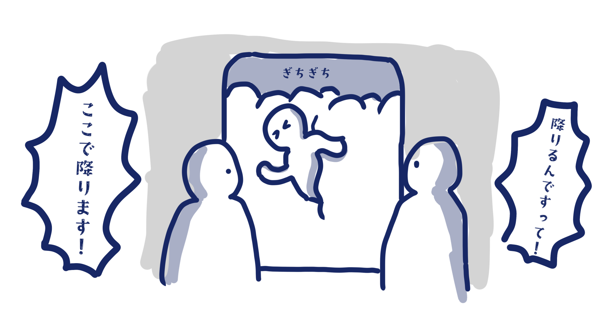
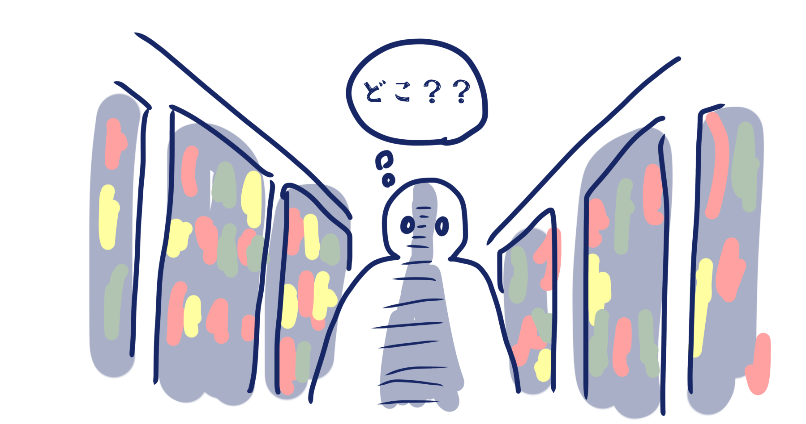

発見した課題

電車やバスで通勤・通学をする方はよくご存じかと思いますが、ラッシュ時の混雑はやばいです。
車内はぎちぎちで、誰がどこで降りるかすらわからないという混沌。
これを少しでも改善することができれば、現代人のQOLは上がるのではないでしょうか。

この世の多くの食材には賞味（消費）期限がありますが、大抵の人は覚えてなどいられません。
冷蔵庫から劇物が発掘されたり、スーパーの陳列がグチャグチャになっていたりと面倒です。
もう少し楽に管理できないものかと思うわけです。

お店の品ぞろえが豊富なのはいいことですが、私はモノを探すのが苦手系ヒューマンなのです。
小一時間店内をさまようことはしょっちゅうで、自分がバイトする店ですら時々迷います。
私のような人間がなるべく迷わないようにしたいのです。時間は大切なので。
みなさんも同人誌即売会で人気サークルの列に並んだことがあると思います。あれは修行です。
好きなモノのためと思えば乗り越えられますが、普通に考えて列に長時間並ぶのはきついでしょう。
なんとかして改善できれば、世の中の笑顔は増えるはずです。スマイル。